As coisas que percebemos permanecem sempre iguais?
Se as coisas mudam, como é possível reconhecê-las?
Tudo o que percebemos é real?
Como saber se aquilo que não conhecemos existe?
É possível conhecer tudo o que existe?
Objetivos
Explorar as relações entre a Filosofia e a vida cotidiana.
Explorar a leitura e o diálogo oral e escrito com textos de diversos gêneros, compreendendo os elementos filosóficos presentes neles.
Refletir sobre os processos de formação e circulação de opinião (mídia, propaganda, arte).
Criar expectativas realistas para si mesmo.
Perceber a realidade
Utilizando nossos sentidos, percebemos a realidade que nos cerca. Também, por meio deles, notamos que essa realidade é formada por inúmeros seres e elementos, distintos entre si e com as mais variadas características.
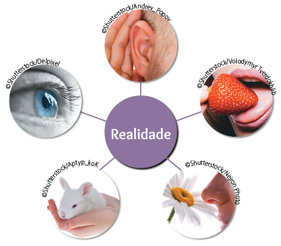
Como compreender toda essa diversidade que percebemos a cada instante e dar significado a ela? Como adquirir conhecimentos e saberes a respeito de tantas coisas? Perguntas como essas já passaram (e ainda passam) pela mente de muitos
filósofos. No decorrer do tempo, cada um deles procurou dar sua contribuição à tentativa de respondê-las.
A seguir, você conhecerá uma dessas contribuições, elaborada por um antigo filósofo. No entanto, imagine quantas novas coisas passaram a existir nos 23 séculos que nos separam da época desse pensador. Seria possível utilizar o método
que ele propôs para melhor compreendê-las? Pense nisso ao conhecer esse método e algumas de suas aplicações.
Olhar de filósofo
Há mais de 2 300 anos, o filósofo grego Aristóteles dedicou sua atenção a vários assuntos, entre os quais a natureza. Encantado com a diversidade que o cercava, procurou observar a máxima quantidade de elementos naturais ao seu
alcance. Ele realizou estudos sobre os astros e seus movimentos; os quatro elementos (água, terra, fogo, ar) e suas combinações; os seres vivos (plantas, animais, pessoas) e suas características. Também procurou organizar a
realidade natural que percebia seguindo um método simples: classificar seus elementos com base em semelhanças e diferenças. Uma dessas classificações refere-se à divisão dos seres segundo o critério de ter ou não ter alma
(anima ou psyché), palavra que, para o filósofo, significava vida, movimento. Assim, Aristóteles classificou os seres em animados (com alma) e inanimados (sem alma). Os seres
inanimados seriam os minerais e os instrumentos utilizados pelo ser humano. Já os seres animados seriam aqueles dotados de vida, movimento e de pelo menos uma das seguintes capacidades da alma:
nutritiva – ligada às atividades necessárias à sobrevivência;
perceptiva – ligada às percepções e às sensações;
racional ou discursiva – ligada ao entendimento e à comunicação.
Com base nesse critério, Aristóteles concluiu que:
as plantas são seres animados, com vida, movimento e apenas uma capacidade da alma (nutritiva);
os animais são seres animados, com vida, movimento e duas capacidades da alma (nutritiva e perceptiva);
os seres humanos têm vida, movimento e são os únicos seres animados com todas as capacidades da alma (nutritiva, perceptiva e racional ou discursiva).
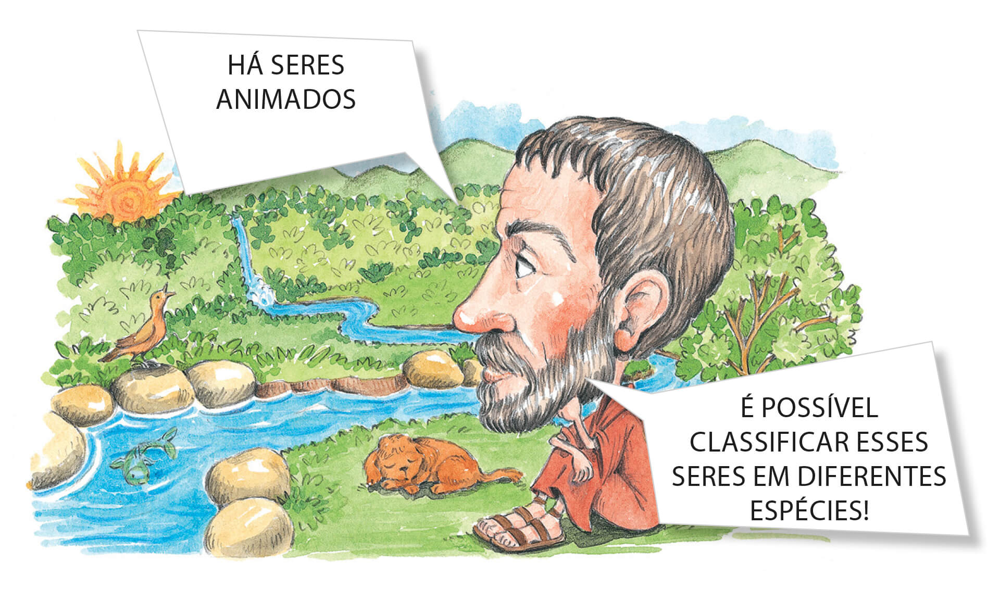
Priscila Sanson. 2010. Mista.
Além disso, Aristóteles classificou os diferentes elementos da natureza em espécies, ou seja, em conjuntos e subconjuntos, conforme as semelhanças e as diferenças que percebia entre eles. Com o passar do tempo, cientistas
empregaram esse mesmo método para classificar a natureza em três reinos: mineral, vegetal e animal. Em cada reino, estabeleceram subconjuntos formados pelas diferentes espécies minerais, vegetais e animais.
Atualmente, novos reinos da natureza também são considerados; mas, tal como Aristóteles, os cientistas ainda utilizam a classificação como método para observá-los e compreendê-los. Dessa forma, podemos concluir que, organizando
“cada coisa em seu lugar”, esse filósofo abriu caminho para o surgimento da divisão científica que conhecemos (Astronomia, para tratar dos astros; Geologia, para os minerais; Botânica, para as plantas; Zoologia, para os animais;
etc.). Contudo, desde a época de Aristóteles até os dias atuais, o ser humano realiza inúmeras transformações na natureza, descobrindo, inventando e fabricando coisas que não foram classificadas pelo filósofo. Sendo assim, podemos
identificar inúmeros elementos naturais que fazem parte do nosso dia a dia, além de uma grande quantidade de elementos criados pela própria humanidade, com base na matéria-prima oferecida pela natureza.
Saiba +
A palavra grega psyché deu origem a alguns termos que usamos atualmente. Por exemplo: psiquismo (conjunto de fenômenos ou processos mentais); psicologia (ciência que estuda o psiquismo humano); psicólogo (profissional que
exerce a Psicologia).
Você sabia que essa palavra pode ser traduzida como “alma” ou como “borboleta”?
Considerando toda a diversidade à sua volta e a maneira como Aristóteles pensou sobre ela, que conjuntos você formaria para classificar os elementos que fazem parte da sua vida diária?
Reúna-se com alguns colegas e registrem, nos conjuntos a seguir, vários elementos que fazem parte do dia a dia de vocês. Nos quadros superiores, escrevam um nome para cada conjunto, de acordo com os elementos que o formam.
Comparem os registros feitos por vocês com os de outras equipes.
Registre as conclusões a que você chegou ao realizar as atividades 1 e 2.
As coisas que existem permanecem iguais?
Nas atividades anteriores, você pôde experimentar uma maneira de perceber as coisas que se aproxima do olhar científico. Além disso, já havia observado que, com base na reflexão de um filósofo, muitas ciências puderam ser criadas.
Dessa forma, a Filosofia seguiu, e ainda segue, um caminho interessante para ampliar saberes e descobertas no decorrer da história e da vida das pessoas.
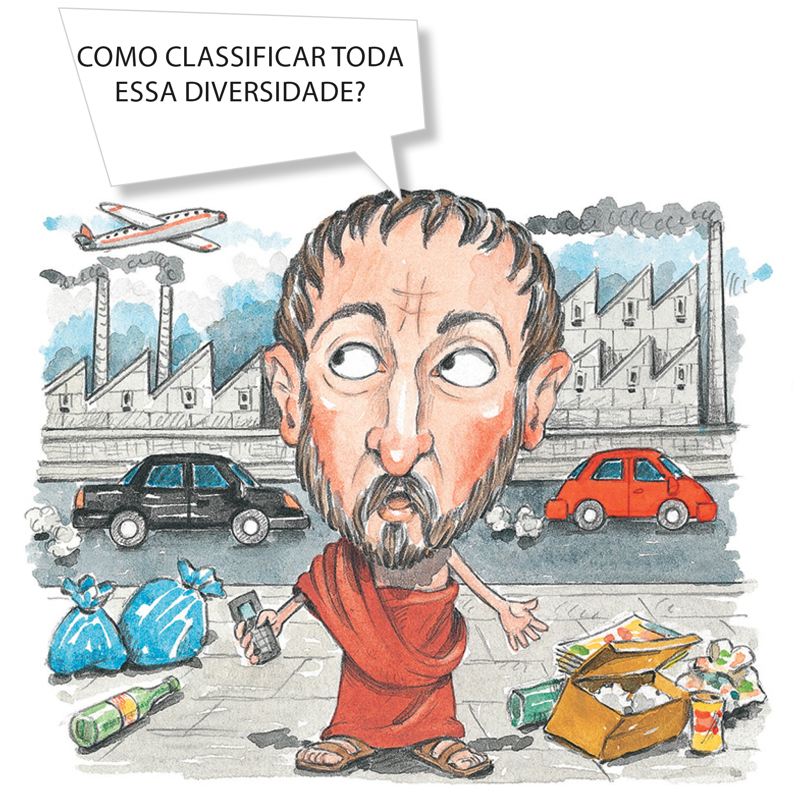
Priscila Sanson. 2010. Mista.
Pensando nisso, reflita: Será que tudo permanece sempre igual ou acontecem mudanças na “ordem das coisas”? Se Aristóteles tivesse a missão de classificar as coisas nos dias atuais, ele adotaria os mesmos critérios de classificação?
Conexões
Ao investigar as mudanças que ocorrem na natureza, podemos encontrar exemplos de seres que passam por metamorfoses no decorrer de sua existência. Pesquise e registre alguns exemplos de seres
vivos que experimentam esse tipo de transformação.
Agora, conheça o ciclo de vida de um ser que passa por metamorfoses e outras mudanças no decorrer de sua existência.
metamorfoses: transformações de forma ou de estrutura que ocorrem em certos animais durante seu ciclo de vida.
Ciclo de vida da borboleta-monarca
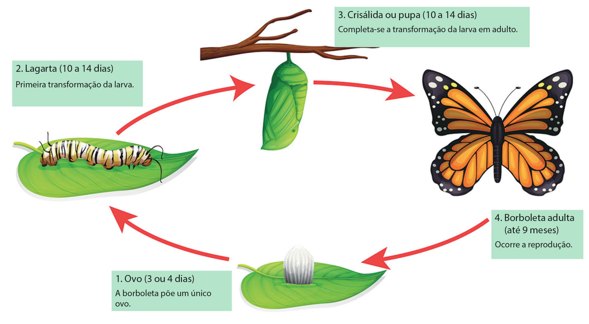
Além da metamorfose, as borboletas-monarcas enfrentam novas mudanças durante a vida. Elas chamam a atenção por realizarem uma longa migração, percorrendo cerca de 4 mil quilômetros.
Todos os anos, em outubro, quando começa o outono no Hemisfério Norte, milhões de borboletas-monarcas deixam os Estados Unidos e o Canadá para fugir do inverno rigoroso desses lugares. Com clima mais ameno, alimento e água abundantes,
o México é o destino dessas incríveis viajantes.
Em fevereiro, quando começa a primavera, elas se acasalam e iniciam o retorno para o norte. Ao longo do caminho, as fêmeas depositam ovos, cujos filhotes, à medida que nascem, participam dessa etapa da longa migração das
borboletas-monarcas.
A crisálida é uma borboleta? Explique por que você pensa assim.
Observe os itens a seguir e classifique-os de acordo com a legenda:
( a ) se isso muda completamente;
( b ) se isso muda parcialmente;
( c ) caso você não tenha certeza se isso muda.
(___) Borboleta
(___) Pensamento
(___) Pessoa
(___) Papel
(___) Borracha
(___) Água
(___) Alimento
(___) Diamante
(___) Sentimento
Conexões
Na Grécia Antiga, acreditava-se que, ao se desprender do corpo, a alma (psyché) tomava a forma de uma borboleta. A vida rastejante da lagarta era relacionada com as dificuldades da existência humana e sua transformação em
borboleta,
tornando-se um ser livre que habita a primavera, representava a libertação da alma de sua difícil condição.
Além disso, na mitologia grega, a alma era representada por uma jovem com asas de borboleta para simbolizar sua imortalidade. Nesse contexto, a personagem mitológica chamada Psyché – ou Psiquê – representava a personificação da alma.
Ela era uma princesa que se casou com o imortal Eros, também conhecido como “Cupido”.
HOYER, Wolf von. Psyche. 1842. 1 escultura em mármore. Nova Pinacoteca, Munique.
DKO Estúdio. 2014. Digital.
Na Filosofia, Platão representava a psyché, como alma, por meio da figura de um cocheiro, que comandava uma carruagem puxada por dois cavalos. O cocheiro representava a racionalidade, e os cavalos, aspectos não racionais da
alma, como os desejos e o instinto de autopreservação. De acordo com esse filósofo, o cocheiro deveria dominar os cavalos para que o indivíduo pudesse levar uma vida virtuosa.
Hora de filosofar
Reflita sobre estas questões em um diálogo filosófico:
A mudança é sempre aparente?
Mudanças são sempre para melhor?
Como podemos reconhecer algo que passa por mudanças?
Quando algo muda, deixa de ser o que é?
Uma mudança pode valorizar o que há de bom em algo?
Situações ruins podem mudar algo para melhor?
Situações boas podem mudar algo para pior?
Há mudanças impossíveis?
As mudanças podem ser revertidas?
Tudo muda?
O que é mudança?
Registre o que mais lhe interessou nesse diálogo.
Realidade e aparência
O que nos cerca, o que percebemos ou cremos sobre as coisas e as pessoas podem sofrer mudanças. Sendo assim, como ter certeza do que sabemos? Nossas percepções são suficientes para julgarmos que sabemos algo? As situações de nosso
cotidiano podem gerar dúvidas a respeito de como percebemos algo? Elas também podem trazer esclarecimentos sobre isso? Refletindo, com base nessas questões, podemos descobrir que nem sempre o que pensamos das coisas, dos seres e das
situações corresponde ao que eles realmente são. Afinal, a aparência é um dos elementos com os quais entramos em contato para perceber e conhecer a realidade.
Por exemplo, quando falamos por telefone com alguém que não conhecemos, o tom de sua voz, o que conversamos e o jeito como se expressa nos ajudam a formar um tipo de conhecimento sobre essa pessoa. Podemos então dizer como ela aparenta
ser pelo que demonstrou na ligação. Quando nos deparamos com uma roupa que nos interessa à venda em uma loja, observando seu estado, podemos julgar se ela aparenta ser nova ou usada. Mas será que a aparência de algo corresponde sempre
ao que ele de fato é?
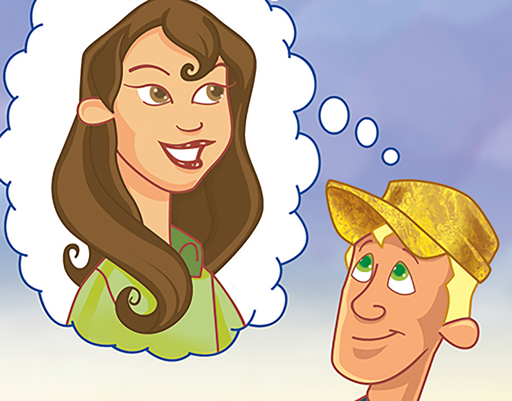
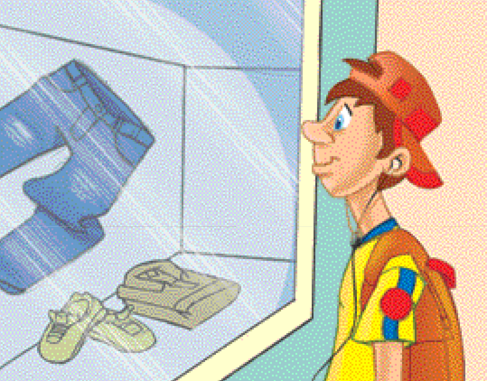
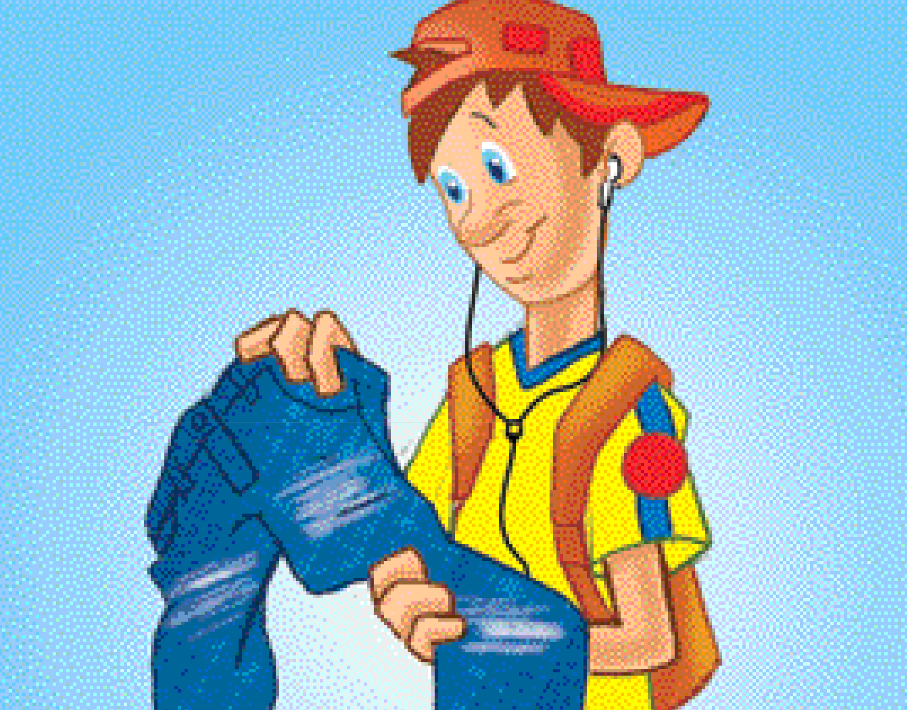
Lemes. 2010. Digital.
Atividades
Converse com os colegas sobre estas questões:
a) Você acredita que a aparência influencia o nosso pensamento e interfere em nosso conhecimento?
b) Que características compõem a aparência de algo?
c) Essas características são as mesmas para a aparência das coisas e a das pessoas?
Juntos, organizem uma lista de características que fazem parte da aparência de algo ou de alguém. Registre essas características no quadro a seguir.
CARACTERÍSTICAS DA APARÊNCIA
Reflita e responda: Pensar nas características da aparência nos leva a perceber as coisas de outra forma? Por quê?
Expresse e justifique sua opinião sobre a função da aparência para o conhecimento.
Aparência e engano
A aparência pode gerar observações parciais e, assim, levar-nos ao engano, principalmente se for aceita sem se considerarem outras fontes de observação, compreensão e pensamento. Afinal, será que tudo é como aparece?
Reflexão divertida
Observe as imagens a seguir e responda às perguntas sobre elas.
a) A segunda imagem reproduz a primeira, como se ela fosse vista por meio de um espelho. No entanto, existem sete diferenças entre elas. Você pode mostrá-las?
b) Anote o que esta atividade fez você pensar.
Olhar de filósofo
A atividade que você realizou na página anterior demonstra que uma leitura precipitada ou apressada das aparências pode conduzir ao engano. Isso faz lembrar uma frase dita muitas vezes pelas pessoas, unindo essas duas ideias:
As aparências enganam! Mas, antes mesmo do surgimento dessa frase, os filósofos já se questionavam sobre as formas de saber e o modo como nos colocamos diante da realidade. Alguns deles refletiram acerca da
existência de realidades “mais reais” do que nos mostram as aparências...
O filósofo Platão viveu na Grécia Antiga e foi mestre de Aristóteles, sobre quem você estudou no início deste capítulo. Por sua vez, Platão foi discípulo de Sócrates. Por isso, este filósofo é apresentado como personagem principal
de muitos livros que Platão escreveu. Em um desses livros, denominado A República, Platão imaginou e descreveu um povo que vivia em uma caverna. Acorrentados pelos pés e pelo pescoço, impossibilitados de se virarem para a entrada,
os membros desse povo observavam as coisas, as pessoas e as situações apenas pelas sombras que eram projetadas na parede, ao fundo da caverna, por uma fogueira acesa fora dela. Acostumaram-se a viver assim, vendo as sombras que se
moviam, ouvindo os sons das vozes das pessoas ao longe e imaginando que elas pertenciam às sombras que se projetavam na parede. Esse era o seu mundo, no qual organizavam o seu pensamento e o seu conhecimento.
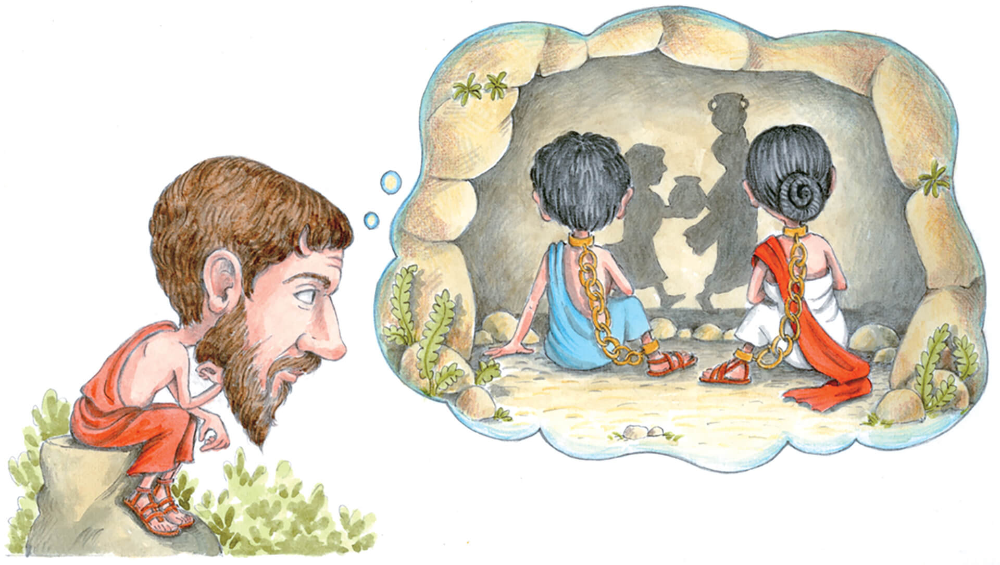
Priscila Sanson. 2017. Digital.
Reflexão divertida
Observe a imagem a seguir. Ela representa as sombras refletidas no interior da caverna e interpretadas pelos prisioneiros, de acordo com o relato de Platão.
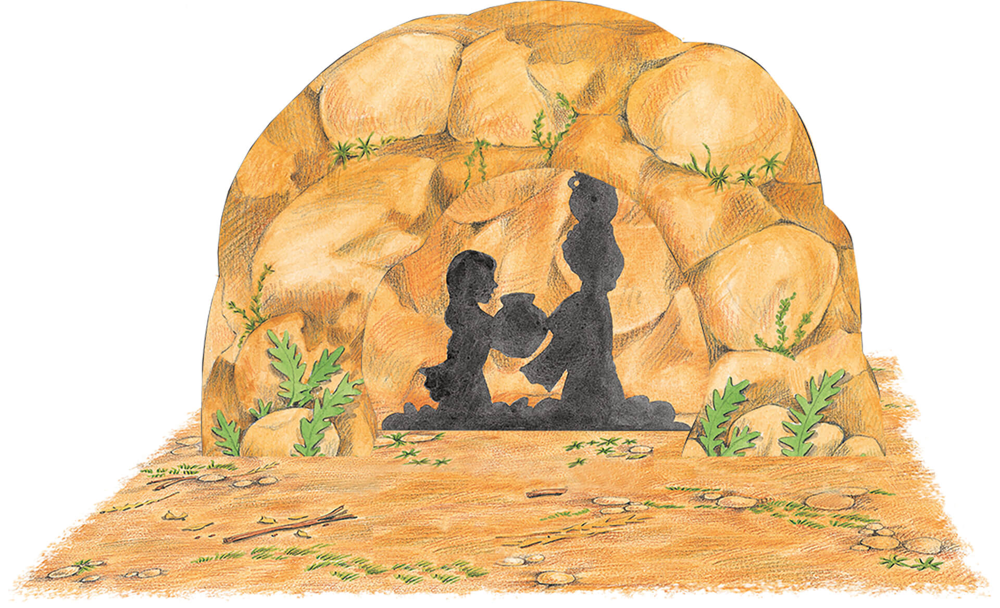
Priscila Sanson. 2010. Mista.
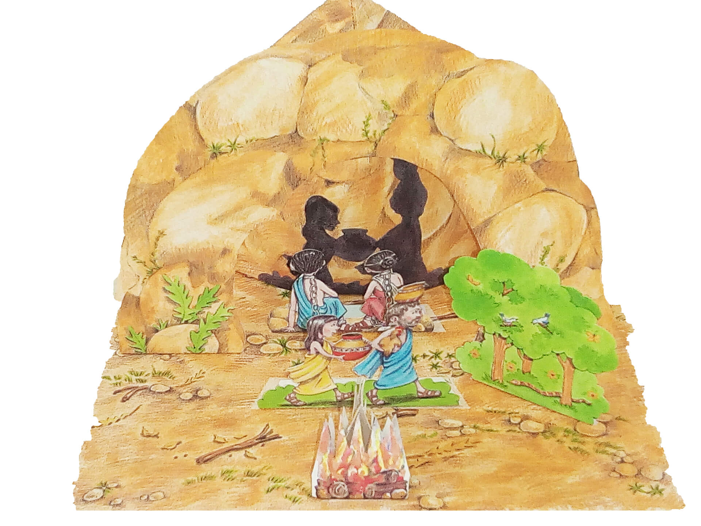
Priscila Sanson. 2010. Mista.
Toque na imagem, para entender melhor a descrição do filósofo a respeito das condições de produção e de interpretação dessas sombras.
Exercite o seu pensamento imaginando que você é uma das pessoas acorrentadas no interior dessa caverna e que acredita conhecer verdadeiramente a realidade.
Imagine-se, agora, como o fugitivo que, por meio da luz do Sol, descobre uma realidade diferente daquela em que acreditava.
Converse com os colegas a respeito do que você observou, imaginou e refletiu nas atividades anteriores.
Hora de filosofar
Reflita sobre as questões a seguir e discuta-as com os colegas.
Somente as aparências enganam?
As pessoas cometem enganos sobre o que sabem ou apenas sobre o que ainda não sabem?
Como é perceber um engano, ou perceber--se enganado sobre algo que se imaginava saber muito bem?
O pensar contribui para diminuir os enganos?
Um engano pode ser proposital, intencional?
Como fugir de um engano?
É errado enganar-se?
É ruim enganar-se?
Enganar-se pode trazer benefícios?
É possível haver situações em que alguém queira ser enganado?
É possível estar aparentemente enganado?
Registre uma ideia interessante que você ouviu dos colegas durante a discussão.
Existência
Uma das razões que nos leva a cometer enganos quando julgamos as aparências é a diversidade daquilo que existe. Essa diversidade também nos leva a classificar as coisas. Em geral, classificamos aquilo que podemos ver, tocar, sentir, ou
seja, o que faz parte do mundo da matéria. Chegamos até mesmo a dizer que algo não existe simplesmente porque não podemos percebê-lo com os sentidos. Será possível existirem coisas que não percebemos, ou percebermos coisas que não
existem?
Conexões
O pintor belga René Magritte foi um dos maiores representantes de um movimento artístico contemporâneo denominado “Surrealismo”.
Esse movimento valorizou a liberdade e o sonho na criação artística sem exigir que as obras imitassem perfeitamente a realidade.
Observe, com atenção, a imagem de uma obra produzida por Magritte há algumas décadas. Observe também o título dessa obra e reflita sobre ambos.
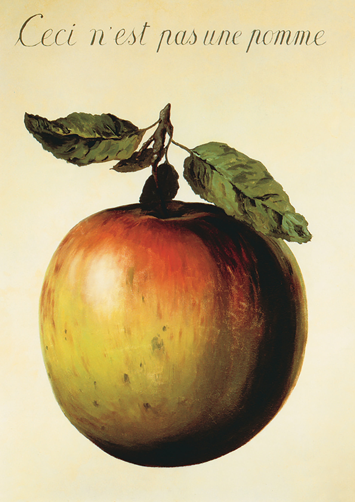
Los Angeles County Museum of Art, Los Angeles
MAGRITTE, René. Isto não é uma maçã. 1964. 1 óleo sobre tela, color., 62,2 cm × 81 cm. Museu de Arte do Condado de Los Angeles, Los Angeles.
Pense: Você acredita que houve um engano quanto ao título da obra ou que ele foi escolhido intencionalmente? E, nesse caso, poderíamos descobrir qual a intenção do artista?
Discuta com os colegas: Vocês consideram que “isto é uma maçã” ou que “isto não é uma maçã”? Por quê?
Registre as conclusões a que você chegou sobre essa obra de Magritte.
Realidade ou ficção?
Na Grécia Antiga, Aristóteles afirmou que o ser humano é o mais imitador dos animais e que o aprendizado começa pela imitação do que percebemos à nossa volta. Segundo ele, imitamos não apenas as atitudes dos outros – como andar ou
falar, por exemplo –, mas também acontecimentos, seres vivos e objetos que nos cercam. Fazemos isso por meio das obras de arte: pinturas, esculturas, músicas, poemas, danças, textos literários, peças de teatro.
Aristóteles afirmou ainda que apreciamos as obras de arte quando elas imitam algo de um modo convincente, ou seja, quando olhamos para uma delas e logo pensamos: “isso parece real” ou “isso poderia ser real”. Essa ideia foi seguida à
risca por muito tempo, mas nem todos concordam com ela.
Por isso, nas últimas décadas, vários artistas vêm se dedicando mais à invenção e à fantasia. Sentem-se livres para criar obras que expressem os sentimentos e as coisas pensadas, imaginadas. Assim, eles tornam mais evidente a
possibilidade de
pensar sobre o que não existe – ou, pelo menos, sobre o que não podemos provar que existe, por meio dos cinco sentidos.
Galeria Tretyakov, Moscou
KANDINSKY, Wassily. Movimento I. 1935. 1 óleo sobre tela, color., 116 cm × 89 cm. Galeria Tretyakov, Moscou.
Contudo, quando se pensa dessa maneira, será que uma nova realidade passa a existir ao lado da anterior? Se acreditamos em algo, isso passa a existir de algum modo? Ou “ser pensado” não é um critério suficiente para se afirmar que algo
existe? Perguntas como essas podem nos ajudar a refletir sobre a ficção, ou seja, a respeito de histórias, mundos, seres e objetos imaginários que aparecem em filmes, clipes musicais, peças teatrais, romances, histórias em quadrinhos ou
mesmo na internet.
Afinal, um dos critérios mais utilizados pelas pessoas para afirmar que algo existe é o fato de percebê-lo com a ajuda dos sentidos. E, por meio das obras de ficção, podemos ver e ouvir coisas imaginárias. Além disso, não podemos ver,
ouvir, tocar ou sentir muitas coisas que a maioria das pessoas afirma que existem. Sendo assim, devemos acreditar na ficção? Devemos acreditar em tudo o que vemos e duvidar de tudo o que não vemos? A ficção deve ser considerada uma
forma de aparência ou uma nova forma da realidade? Pense nisso e participe do diálogo filosófico sobre mais esse tema!
Hora de filosofar
De acordo com as orientações do professor, discuta com os colegas a respeito das questões apresentadas no diagrama ao lado.
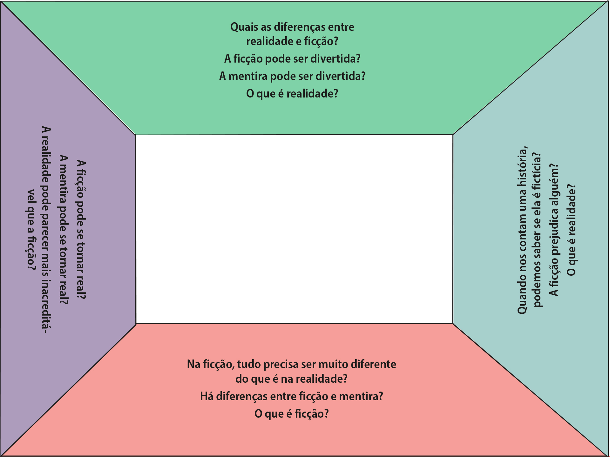
Atividades
Com as orientações do professor, reúnam-se em equipes, criem histórias de ficção e escolham modos de apresentá-las (vídeo, dramatização, música, texto, quadrinhos, etc.). Para criar sua história, cada equipe deverá escolher como tema
um dos elementos a seguir, os quais foram citados nas páginas anteriores.
ALMA
BORBOLETA
ENGANO
NATUREZA
PLANTA
ANIMAL
CAVERNA
FILÓSOFO
OBRA DE ARTE
REALIDADE
APARÊNCIA
CIÊNCIA
MAÇÃ
PESSOA
SOMBRA
Imaginação e realidade
O ser humano conta com diversas habilidades para perceber e conhecer a realidade. Além da percepção sensível, captada por meio dos cinco sentidos, somos capazes de formar ideias e pensamentos a respeito daquilo que existe e, até mesmo,
daquilo que não existe. Vamos refletir sobre essa capacidade?
Reflexão divertida
Quando alguém diz “cavalo”, que imagem vem à sua mente? E se alguém diz “quimera”, o que você imagina? Represente em seu caderno esses seres por meio de desenhos.
Cavalo
Quimera
quimera: figura mitológica, caracterizada por uma aparência híbrida de dois ou mais animais.
Conversem sobre as questões a seguir.
Seus desenhos são idênticos às imagens mentais que você formou de cada ser?
O cavalo que você imaginou se parece com um cavalo real? E seu desenho se parece com um cavalo real?
Como você imaginou uma quimera?
O desenho que você fez de uma quimera se parece com o modo como os colegas a imaginaram?
O que você imaginou existe?
Anote as conclusões a que você chegou após realizar as atividades 1 e 2.
Imaginar e conhecer
A imaginação não tem limites para criar seres e situações, mas será que ela ajuda a formar um conhecimento seguro da realidade? Aristóteles se preocupou com essa questão e investigou qual a contribuição da imaginação para o
conhecimento.
Segundo ele, a imaginação (em grego, phantasía) é a capacidade que temos de formar imagens ou representações de algo (em grego, phantásmata) de acordo com a memória, o desejo, a motivação, a linguagem e o pensamento
de cada um. Por
isso, Aristóteles considerava que a imaginação é fruto do que percebemos na realidade e também da nossa capacidade intelectiva de criar imagens conforme nossa vontade.
BRITTO, Romero. Cavalo, cavalo. 2002. 1 acrílico sobre tela, color., 48 cm × 60 cm.
Representação artística de um cavalo
A fotografia traz uma representação bastante próxima de um cavalo real, mas, na pintura, o artista “soltou” a imaginação e acrescentou novos elementos à figura do animal. Ainda que essa representação seja bem diferente da imagem de um
animal real, é possível reconhecer o que o artista quis representar porque conhecemos cavalos reais. E a imaginação não para por aí! Além de criar representações de imagens reais (mesmo que modificadas), ela pode criar seres que não
existem. Um exemplo é o cavalo alado Pégasus, citado na mitologia grega. Apesar de não existirem cavalos alados na realidade, a imaginação humana juntou aspectos de seres reais, como cavalo e ave, para criar essa quimera.
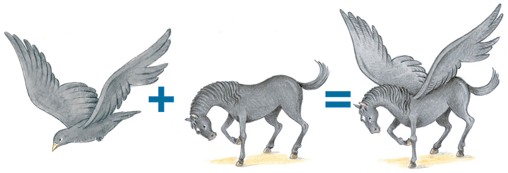
Priscila Sanson. 2017. Mista.
Pensando nessas questões, Aristóteles concluiu que a imaginação não tem o compromisso de representar “corretamente” a realidade. Uma vez que o ser humano deseja, tem vontade, a imaginação torna-se um ingrediente importante para
orientar suas ações no mundo. Além disso, um mundo sem imaginação não teria a mesma graça. A mitologia, a literatura, a poesia, o cinema, o teatro e outras formas de arte são exemplos de conhecimentos que se constroem com base na
capacidade imaginativa do ser humano.
Ética e cidadania
No mundo em que vivemos, existem muitas coisas belas para admirar. Contudo, nele também há situações que não são belas e podem trazer pensamentos tristes, como a violência, o preconceito, a injustiça e a desigualdade. Pensando
nisso, imagine um mundo ideal para se viver e elabore uma lista com os itens que você considera importante existirem nesse mundo imaginado.
Dos itens que você listou na atividade 1, escreva aqueles que você considera possíveis de se realizar.
Escolha três itens que você listou na atividade 2 e preencha a tabela a seguir com as informações solicitadas.
Coisas possíveis de se realizar
O que é preciso fazer para realizar isso?
O que impede que isso se realize?
O que você já faz para isso se realizar?
Modos de existir
Vimos antes que estamos cercados por uma incrível diversidade de seres e coisas. Dessa forma, cada um de nós conhece apenas uma parte daquilo que existe. Além disso, podemos conhecer algo que outra pessoa desconhece ou vice-versa. E
quando ouvimos falar de algo desconhecido, como saber se isso de fato existe? O que pode nos dar certezas sobre a existência de algo, de alguém ou de nós mesmos? Quais são os critérios que normalmente observamos para buscar esse tipo de
certeza?
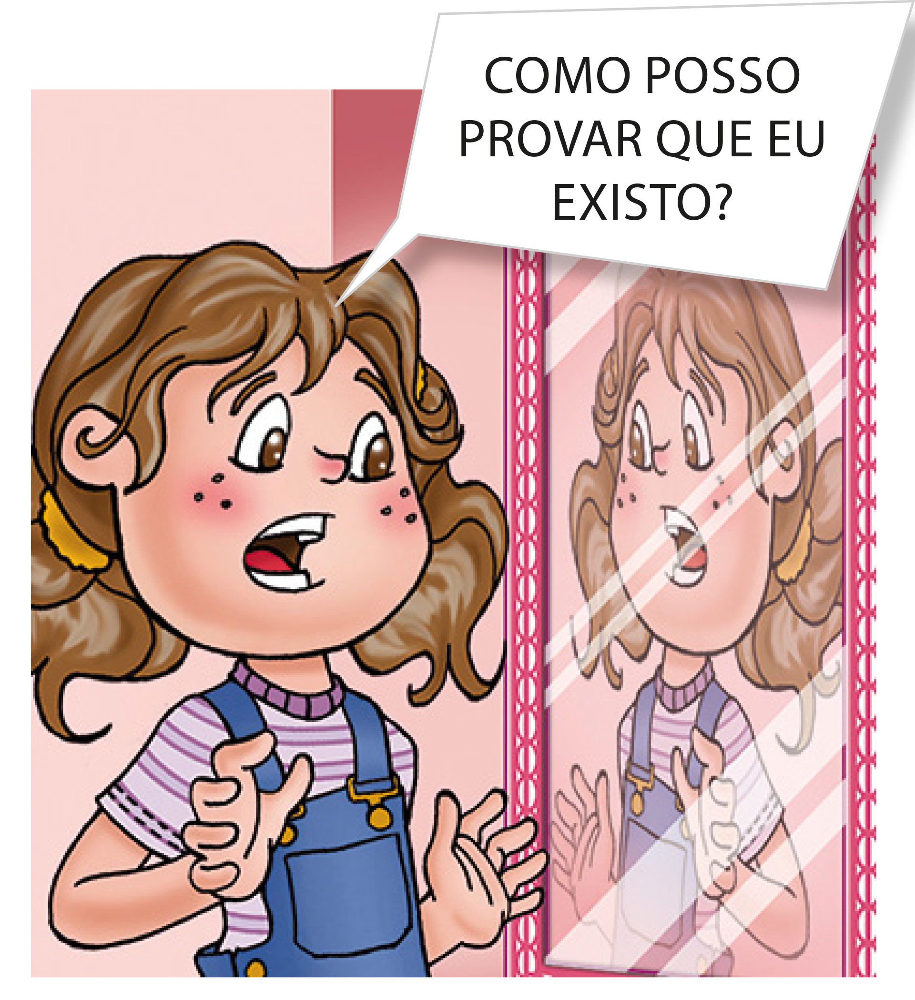
Lemes. 2010. Digital.
Essas questões desafiadoras podem se tornar ainda mais difíceis de serem respondidas quando observamos que há diferentes modos de existir. Você já pensou, por exemplo, se uma ideia existe da mesma forma que uma borboleta, um papagaio,
um museu, uma pessoa, um nome e assim por diante? Será que utilizaríamos o mesmo critério para nos certificarmos da existência de cada um dos itens que acabamos de mencionar?
Por outro lado, talvez você considerasse muito estranho se, de repente, alguém lhe pedisse para provar que você existe. Mesmo assim, imagine-se nessa situação. O que faria para provar sua própria existência? Mesmo crendo nela, você
poderia fazer com que os outros também acreditassem? Poderia dar a eles uma garantia de que você não é um exemplo de ficção ou de imaginação? Todos esses questionamentos servem para mostrar que a existência é assunto para muita reflexão
e muito diálogo...
Hora de filosofar
Para refletir sobre a existência, considere os itens a seguir e circule os que correspondem a algo que você julga existir.
Unicórnio
Extraterrestre
Sombra
Sonho
Número
Passado
Futuro
Algo que não possa ser representado por palavras
Coisas sem nome
Nomes que não representam nada
Problemas sem solução
Perguntas sem resposta
Discuta com os colegas se há semelhanças e diferenças entre os modos de existir dos elementos que você circulou.
Após o diálogo, responda com suas palavras: O que significa existir?
Olhar de filósofo
No século XX, um filósofo francês chamado Jean-Paul Sartre destacou uma diferença fundamental entre os modos de existir das coisas e das pessoas. Segundo ele, as coisas são pensadas e
planejadas por alguém antes de existirem. Mas as pessoas, primeiramente, nascem, ou seja, começam a existir. Somente depois disso, planejam seus próprios modos de ser, pensar, agir e conviver. Assim, elas transformam sua existência,
dia após dia, com as escolhas que fazem e as atitudes que tomam. Por isso, talvez encontremos coisas iguais, mas não pessoas iguais.
Jean-Paul Sartre se pronuncia Jan Pôu Sartre.
Priscila Sanson. 2010. Mista.
Você concorda ou não com as ideias de Sartre? Escreva sua opinião e lembre-se de justificá-la com argumentos.
Conexões
Sartre dedicou-se a refletir principalmente sobre a existência humana. Que tal também refletir acerca da existência de uma pessoa? Essa pessoa será você mesmo! Para começar, tente lembrar-se de como você era e pensava há um ano. Agora,
procure recordar-se de como você era e pensava há cinco anos. É possível perceber muitas diferenças entre o modo como você é e o modo como pensa na atualidade? Você consegue imaginar como será e como pensará daqui a mais um ano? E daqui
a mais cinco anos? É possível prever algumas mudanças pelas quais você vai passar? Reflita ainda a respeito do fato de existir e conviver com outras pessoas, diferentes de você.
Produza, no caderno, um texto sobre sua própria existência. Nesse texto, descreva como é ser você.
Neste capítulo, você pensou sobre coisas que existem e a respeito dos seus diferentes modos de existir. Esperamos que essas reflexões tenham aguçado a sua curiosidade sobre o que é verdadeiro e sobre o que podemos saber. Em breve,
você terá a oportunidade de refletir mais acerca desses temas!